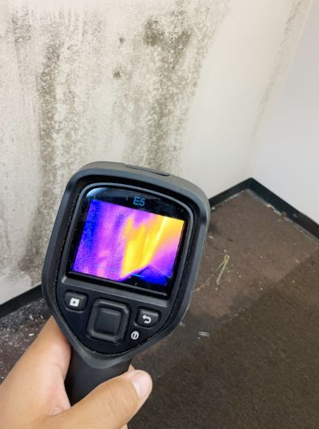
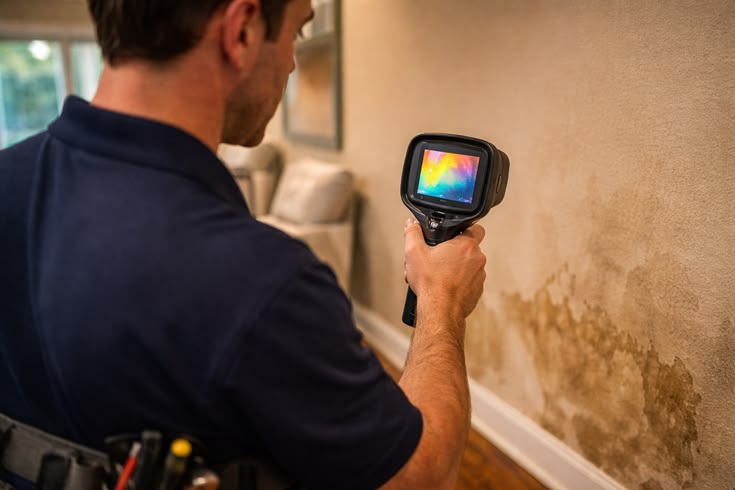
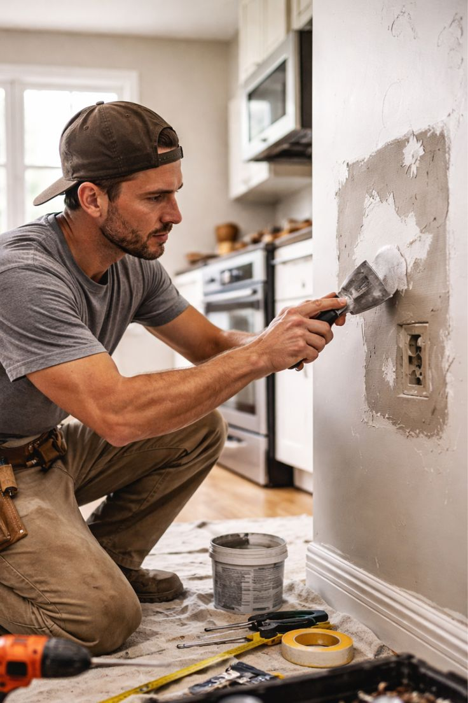

مقدمة
تعتبر رطوبة الجدران من أكثر المشكلات المنزلية إزعاجًا وانتشارًا في الرياض، فهي لا تؤثر فقط على المظهر الجمالي للمنزل، بل تمتد آثارها لتشمل سلامة الهيكل الإنشائي وصحة أفراد الأسرة. ولهذا يبحث الكثير من أصحاب المنازل والفلل عن شركة معالجة رطوبة بالرياض تمتلك الخبرة والأجهزة الحديثة اللازمة لتشخيص المشكلة من جذورها بدلًا من الاكتفاء بحلول سطحية مؤقتة.
تختلف رطوبة الجدران في أسبابها ودرجة خطورتها، فقد تكون ناتجة عن تسرب بسيط في ماسورة مياه، أو ارتفاع منسوب المياه الجوفية، أو ضعف في طبقات العزل الخارجي للمبنى، ولهذا فإن التعامل مع شركة معالجة رطوبة بالرياض تعتمد منهجية فحص علمية دقيقة هو الضمان الحقيقي للوصول إلى حل جذري ونهائي للمشكلة.
تقدم شركة اعمار المنزل للخدمات المنزلية خدمة متكاملة لمعالجة الرطوبة تبدأ بالكشف الدقيق عن مصدر المشكلة باستخدام أجهزة كشف حديثة، وتنتهي بتنفيذ خطوات معالجة احترافية تضمن عدم عودة الرطوبة مرة أخرى. وبصفتها شركة معالجة رطوبة بالرياض ذات خبرة واسعة، تحرص الشركة على تقديم تشخيص دقيق قبل البدء في أي عمل، لتجنب إهدار وقت ومال العميل في حلول غير مجدية.
وإذا كنت تعاني من بقع رطوبة على الجدران أو الأسقف، أو تشعر برائحة عفن غير مبررة داخل المنزل، فإن التواصل مع شركة معالجة رطوبة بالرياض متخصصة يعد الخطوة الأولى الصحيحة نحو حل هذه المشكلة قبل أن تتفاقم وتتحول إلى أضرار إنشائية مكلفة.
وسواء كانت المشكلة في جدار غرفة واحدة أو منتشرة في أكثر من مكان بالمنزل، فإن الاعتماد على تشخيص احترافي دقيق هو ما يفرق بين حل يدوم لسنوات وحل مؤقت سرعان ما تعود معه المشكلة من جديد، وهو ما تحرص عليه شركة اعمار المنزل في كل مشروع تتعامل معه بغض النظر عن حجمه أو موقعه داخل الرياض.ما أسباب رطوبة الجدران في المنازل؟
تتعدد أسباب ظهور الرطوبة على الجدران، ومن أهمها:
- تسرب مياه من شبكة الصرف الصحي أو مواسير المياه الداخلية.
- ضعف أو تلف طبقات العزل المائي للأسطح والجدران الخارجية.
- ارتفاع منسوب المياه الجوفية في بعض المناطق.
- سوء التهوية داخل الغرف والحمامات.
- تسرب مياه الأمطار من خلال الشقوق والفواصل الإنشائية.
- تكثف بخار الماء الناتج عن فارق درجات الحرارة بين الداخل والخارج.
- تسرب من خزانات المياه المجاورة للجدران.
ولكل سبب من هذه الأسباب طريقة تشخيص مختلفة، فمثلًا تسرب المواسير الداخلية غالبًا ما يظهر على شكل بقعة رطوبة موضعية تتوسع تدريجيًا حول نقطة معينة، بينما ضعف العزل الخارجي يظهر عادة على هيئة بقع منتشرة على طول الجدار الملامس للخارج، خصوصًا في الطوابق العلوية القريبة من السطح. أما مشكلات التهوية الضعيفة فتظهر غالبًا في الحمامات والمطابخ على شكل تكاثف مائي خفيف يتحول مع الوقت إلى بقع فطرية داكنة.
ولهذا فإن أي شركة معالجة رطوبة بالرياض تحترم عملها لا تبدأ بمعالجة الأعراض الظاهرة فقط، بل تحرص على تحديد السبب الجذري أولًا لضمان عدم تكرار المشكلة بعد فترة قصيرة من الانتهاء من العمل.
أضرار إهمال رطوبة الجدران
قد يعتقد البعض أن رطوبة الجدران مجرد مشكلة جمالية بسيطة، لكن الحقيقة أن إهمالها لفترة طويلة قد يؤدي إلى أضرار جسيمة، منها:
- تلف الدهانات وتقشرها بشكل متكرر.
- ظهور العفن الأسود الذي يشكل خطرًا على الجهاز التنفسي.
- تآكل حديد التسليح داخل الجدران الخرسانية.
- ضعف تماسك الجص والمواد الإنشائية.
- انتشار روائح كريهة داخل المنزل.
- تدهور قيمة العقار عند الرغبة في بيعه.
- تأثر صحة أفراد الأسرة، خاصة الأطفال وكبار السن ومرضى الحساسية.
ولهذا السبب تنصح شركة معالجة رطوبة بالرياض بعدم تأجيل معالجة أي بقعة رطوبة مهما بدت بسيطة، لأن المشكلة تتفاقم بصمت حتى تظهر أضرارها الحقيقية بعد فوات الأوان.
كيف تكتشف شركة معالجة رطوبة بالرياض مصدر المشكلة؟

يبدأ فريق شركة اعمار المنزل للخدمات المنزلية عملية الكشف بجولة ميدانية شاملة على الجدران المتضررة، مع الاستعانة بأجهزة قياس نسبة الرطوبة الدقيقة التي تحدد مدى تشبع الجدار بالماء، وتساعد في التمييز بين الرطوبة السطحية والرطوبة العميقة المتغلغلة داخل البناء.
كما يستعين الفريق بالكاميرات الحرارية المتخصصة التي تكشف فروق درجات الحرارة غير الطبيعية داخل الجدار، وهي وسيلة فعالة لتحديد مسار المياه المتسربة دون الحاجة إلى تكسير أجزاء كبيرة من الجدار بشكل عشوائي.

وبهذه المنهجية العلمية الدقيقة، تستطيع شركة معالجة رطوبة بالرياض تحديد المصدر الحقيقي للمشكلة بدلًا من معالجة الأعراض الظاهرة فقط، وهو ما يضمن نتيجة نهائية دائمة لا تعود فيها الرطوبة بعد فترة قصيرة.
خطوات معالجة رطوبة الجدران باحترافية
أولًا: الفحص والتشخيص الدقيق
تبدأ شركة معالجة رطوبة بالرياض بمعاينة شاملة للموقع باستخدام أجهزة القياس والكاميرات الحرارية لتحديد مصدر الرطوبة بدقة، وتحديد ما إذا كانت المشكلة ناتجة عن تسرب مياه، أو ضعف عزل، أو سوء تهوية.
ثانيًا: إزالة الطبقات المتضررة

يتم إزالة طبقات الدهان والجص المتضررة بالرطوبة بشكل كامل، مع تنظيف السطح جيدًا للتخلص من أي آثار للعفن أو الفطريات المتكونة نتيجة تراكم الرطوبة لفترة طويلة.
ثالثًا: معالجة مصدر التسرب
إذا كان سبب الرطوبة تسربًا في المواسير أو ضعفًا في العزل، يتم إصلاح المصدر أولًا قبل الانتقال إلى أي خطوة أخرى، لأن معالجة الجدار دون حل السبب الجذري تعني عودة المشكلة سريعًا.
رابعًا: تجفيف الجدار بالكامل
يحتاج الجدار إلى فترة تجفيف كافية للتخلص من كل أثر للرطوبة الداخلية قبل البدء في أي أعمال ترميم أو دهانات جديدة، وهي خطوة ضرورية يحرص عليها فريق شركة اعمار المنزل لضمان عدم حبس أي رطوبة متبقية خلف الطبقات الجديدة.
خامسًا: عزل الجدار ومعالجته كيميائيًا
يتم استخدام مواد عازلة ومضادة للرطوبة معتمدة لحماية الجدار من عودة المشكلة، بالإضافة إلى مواد مضادة للفطريات والعفن للقضاء على أي بقايا بيولوجية متكونة.
سادسًا: إعادة الترميم والتشطيب

بعد التأكد من جفاف الجدار ومعالجته بالكامل، يقوم الفريق بإعادة تشطيبه بمواد عالية الجودة لإعادته إلى شكله الطبيعي، مع مراعاة تطابق الدهانات والتشطيبات مع باقي أجزاء المنزل.
مواد معالجة الرطوبة المستخدمة
تعتمد شركة معالجة رطوبة بالرياض على مجموعة من المواد المتخصصة المعتمدة عالميًا، ومنها:
- مواد عازلة كيميائية تمنع تسرب المياه عبر مسام الجدار.
- طلاءات مقاومة للرطوبة تشكل حاجزًا واقيًا على السطح.
- مواد مضادة للفطريات والعفن للقضاء على البكتيريا المتراكمة.
- حقن كيميائية خاصة بمعالجة الرطوبة الصاعدة من الأساسات.
- ألواح عزل حراري ومائي للجدران المعرضة لرطوبة خارجية دائمة.
وتحرص شركة اعمار المنزل للخدمات المنزلية على استخدام مواد مطابقة للمواصفات القياسية السعودية، لضمان نتيجة معالجة تدوم لسنوات طويلة دون الحاجة لتكرار العمل.
وبالإضافة إلى جودة المواد المستخدمة، يحرص الفريق الفني على تطبيق كل مادة وفق الطريقة الصحيحة الموصى بها من الجهة المصنعة، سواء من حيث عدد الطبقات المطلوبة أو فترة الجفاف بين كل طبقة وأخرى، لأن أي خلل في طريقة التطبيق قد يقلل من فعالية المادة العازلة مهما كانت جودتها الأصلية عالية.
أنواع رطوبة الجدران وطرق التعامل معها
الرطوبة الصاعدة
تنتج عن ارتفاع الماء من التربة عبر الأساسات إلى الجدران، وتحتاج إلى معالجة خاصة بحقن مواد عازلة في قاعدة الجدار لمنع استمرار صعود الرطوبة.
الرطوبة الجانبية
تحدث نتيجة تسرب مياه من جدار مجاور أو تربة رطبة ملاصقة للمبنى، وتحتاج إلى عزل خارجي إضافي لمنع تسرب المياه الجانبية.
رطوبة التكثف
تظهر نتيجة فارق درجات الحرارة بين الداخل والخارج، وتنتشر غالبًا في الحمامات والمطابخ ذات التهوية الضعيفة، وتحتاج إلى تحسين التهوية بجانب معالجة الجدار.
رطوبة التسرب المباشر
تنتج عن تسرب مياه مباشر من ماسورة أو خزان أو سطح غير معزول جيدًا، وتحتاج إلى إصلاح مصدر التسرب أولًا قبل معالجة الجدار نفسه.
وتتعامل شركة معالجة رطوبة بالرياض مع كل نوع من هذه الأنواع بأسلوب مختلف يتناسب مع طبيعة المشكلة وموقعها داخل المبنى، فمعالجة الرطوبة الصاعدة تختلف تمامًا عن معالجة رطوبة التكثف من حيث المواد المستخدمة والخطوات الفنية المتبعة، ولهذا يعد التشخيص الدقيق لنوع الرطوبة أولى خطوات نجاح أي عملية معالجة، إذ إن استخدام أسلوب معالجة غير مناسب لنوع الرطوبة الفعلي قد يؤدي إلى إهدار الوقت والمال دون التوصل إلى حل حقيقي للمشكلة.
علامات تدل على وجود رطوبة في جدران منزلك
هناك عدة مؤشرات تساعدك على اكتشاف مشكلة الرطوبة مبكرًا قبل أن تتفاقم، ومنها:
- ظهور بقع داكنة أو صفراء على الجدران والأسقف.
- تقشر الدهان أو انتفاخه في مناطق معينة.
- رائحة عفن مستمرة داخل الغرفة رغم التنظيف.
- ظهور نقاط سوداء تدل على تكون الفطريات.
- برودة غير طبيعية عند لمس الجدار.
- تساقط أجزاء من الجص أو الدهان بشكل متكرر.
وفي حال ملاحظة أي من هذه العلامات، ينصح بالتواصل الفوري مع شركة معالجة رطوبة بالرياض لتحديد حجم المشكلة قبل أن تنتشر إلى مساحات أوسع من المنزل.
لماذا لا يجب إهمال رطوبة الجدران؟
يعتقد بعض أصحاب المنازل أن رطوبة الجدران مشكلة موسمية تختفي من تلقاء نفسها مع تغير الطقس، لكن هذا الاعتقاد خاطئ تمامًا في أغلب الحالات. فالرطوبة التي لا تتم معالجتها بشكل صحيح تستمر في التوسع تحت السطح حتى لو بدا الجدار جافًا من الخارج مؤقتًا.
ومن هنا تأتي أهمية التعامل مع شركة معالجة رطوبة بالرياض تمتلك أجهزة كشف دقيقة قادرة على تحديد نسبة الرطوبة الفعلية داخل الجدار، وليس فقط تقييم الحالة بالعين المجردة التي قد تكون خادعة في كثير من الأحيان.
الفرق بين المعالجة المؤقتة والمعالجة الجذرية
المعالجة المؤقتة
تعتمد على إخفاء أثر الرطوبة بطبقة دهان جديدة دون معالجة السبب الحقيقي، وغالبًا ما تؤدي إلى:
- عودة البقعة خلال أسابيع قليلة.
- استمرار تدهور حالة الجدار من الداخل.
- إهدار تكلفة الدهان والعمالة دون فائدة حقيقية.
- تفاقم المشكلة لتشمل مساحة أكبر من الجدار.
المعالجة الجذرية
تعتمدها شركة معالجة رطوبة بالرياض المحترفة من خلال:
- تحديد مصدر الرطوبة الحقيقي ومعالجته أولًا.
- استخدام مواد عازلة معتمدة تمنع عودة المشكلة.
- تجفيف الجدار بالكامل قبل إعادة التشطيب.
- ضمان نتيجة تدوم لسنوات طويلة دون تكرار العمل.
ولهذا يفضل عملاء الرياض التعامل مع شركة اعمار المنزل للخدمات المنزلية التي تعتمد أسلوبًا علميًا مدروسًا بدلًا من الحلول السطحية المؤقتة التي لا تحل المشكلة من جذورها.
هل يمكن أن تسبب الرطوبة أضرارًا صحية؟
نعم، فالرطوبة المستمرة تخلق بيئة مثالية لنمو الفطريات والعفن الذي قد يتسبب في مشكلات تنفسية وحساسية لدى سكان المنزل، خاصة الأطفال وكبار السن ومرضى الربو. ولهذا لا تقتصر أهمية التعامل مع شركة معالجة رطوبة بالرياض على الجانب الجمالي أو الإنشائي فقط، بل تمتد لتشمل حماية صحة الأسرة بأكملها من المخاطر الصحية المرتبطة بالرطوبة والعفن المتراكم.
نصائح للوقاية من عودة الرطوبة مستقبلاً
بعد إتمام عملية المعالجة، تقدم شركة اعمار المنزل للخدمات المنزلية مجموعة من النصائح للحفاظ على الجدران من عودة المشكلة:
- التأكد من كفاءة التهوية في الحمامات والمطابخ بشكل دائم.
- فحص شبكة المواسير والخزانات بشكل دوري.
- معالجة أي شرخ بسيط في الجدران الخارجية فور ظهوره.
- التأكد من سلامة عزل السطح قبل بداية موسم الأمطار.
- تجنب تكديس الأثاث بشكل ملاصق تمامًا للجدران الخارجية.
- إجراء فحص دوري سنوي للجدران المعرضة للرطوبة سابقًا.
وتؤكد شركة معالجة رطوبة بالرياض أن الوقاية الدورية توفر على أصحاب المنازل الكثير من تكاليف المعالجة المتكررة على المدى الطويل.
كم تستغرق عملية معالجة رطوبة الجدار؟
تختلف المدة حسب حجم الضرر ومصدر الرطوبة، فبعض الحالات البسيطة قد تحتاج إلى يوم أو يومين فقط، بينما تحتاج الحالات الأكثر تعقيدًا مثل الرطوبة الصاعدة من الأساسات إلى وقت أطول يشمل فترة التجفيف الكاملة قبل إعادة التشطيب. وتحرص شركة اعمار المنزل لمعالجة رطوبة الجدران على توضيح المدة المتوقعة للعميل بشكل واضح منذ بداية المعاينة.
لماذا يفضل العملاء شركة اعمار المنزل للخدمات المنزلية؟
عند البحث عن شركة معالجة رطوبة بالرياض يحرص العملاء على اختيار جهة تمتلك الخبرة والمصداقية والقدرة على تشخيص المشكلة بدقة قبل البدء في العمل.
ولهذا يفضل الكثيرون شركة اعمار المنزل للخدمات المنزلية لما تتميز به من:
- أجهزة كشف حديثة تحدد مصدر الرطوبة بدقة عالية.
- فريق فني متخصص في معالجة جميع أنواع الرطوبة.
- مواد عازلة ومضادة للفطريات معتمدة عالميًا.
- تشخيص علمي دقيق قبل البدء في أي عمل تنفيذي.
- ضمان على أعمال المعالجة المنفذة.
- سرعة الاستجابة والوصول لجميع أحياء الرياض.
- أسعار مناسبة تتلاءم مع حجم الضرر الفعلي.
كما تعمل شركة معالجة رطوبة بالرياض التابعة لإعمار المنزل على تطوير أساليبها وأدواتها باستمرار لمواكبة أحدث تقنيات الكشف والمعالجة المتوفرة عالميًا.
ومن أهم ما يميز فريق العمل أيضًا معرفته العميقة بطبيعة التربة والمناخ في منطقة الرياض تحديدًا، فمشكلات الرطوبة في المباني القريبة من مناطق الأودية أو ذات التربة الطينية تختلف جذريًا عن المباني المقامة على تربة صخرية، وهذه الخبرة المحلية المتراكمة تمنح الفريق قدرة أعلى على التشخيص الدقيق مقارنة بأي حلول عامة غير مخصصة لطبيعة المنطقة.
ما الذي يحدد تكلفة معالجة الرطوبة؟
تختلف تكلفة معالجة رطوبة الجدران من حالة لأخرى بناءً على عدة عوامل رئيسية، أهمها مساحة المنطقة المتضررة، ونوع الرطوبة سواء كانت سطحية أو صاعدة أو ناتجة عن تسرب مباشر، بالإضافة إلى موقع الجدار داخل المبنى وسهولة الوصول إليه. كما تؤثر المواد المستخدمة في المعالجة على التكلفة الإجمالية، فبعض الحالات تحتاج فقط إلى طلاءات عازلة بسيطة، بينما تحتاج حالات أخرى إلى حقن كيميائية متخصصة أو أعمال عزل إضافية أكثر تكلفة.
وتحرص شركة اعمار المنزل للخدمات المنزلية على تقديم عرض سعر واضح وشفاف للعميل بعد الانتهاء من المعاينة المبدئية، بحيث يعرف العميل التكلفة الكاملة قبل الموافقة على بدء العمل، دون أي مفاجآت أو رسوم إضافية لاحقة.
الفرق بين معالجة الرطوبة الداخلية والخارجية
تختلف طريقة التعامل مع الرطوبة بناءً على موقعها، فمعالجة الرطوبة الداخلية تركز على الجدار من الداخل باستخدام مواد عازلة وطلاءات مضادة للفطريات بعد إزالة الطبقات المتضررة، وهي مناسبة للحالات الناتجة عن تسرب داخلي أو ضعف تهوية.
أما معالجة الرطوبة الخارجية فتتطلب التعامل مع الجدار من الخارج، من خلال عزل الواجهات الخارجية أو معالجة التربة المحيطة بالمبنى في حالات الرطوبة الجانبية أو الصاعدة، وهي عملية أكثر تعقيدًا تحتاج إلى فريق فني متمرس يمتلك خبرة في التعامل مع طبيعة التربة والمباني في منطقة الرياض تحديدًا.
وفي كثير من الحالات، تجمع شركة معالجة رطوبة بالرياض بين الأسلوبين معًا للوصول إلى نتيجة متكاملة تضمن معالجة المشكلة من الداخل والخارج في آن واحد.
دور التهوية الجيدة في الوقاية من الرطوبة
تلعب التهوية دورًا محوريًا في الحد من تراكم الرطوبة داخل المنزل، خاصة في الحمامات والمطابخ التي تشهد نشاطًا مستمرًا لبخار الماء. فسوء التهوية يؤدي إلى تكاثف بخار الماء على الجدران الباردة، وهو ما يخلق بيئة مثالية لنمو الفطريات مع مرور الوقت حتى لو لم يكن هناك أي تسرب مياه فعلي في المكان.
ولهذا تنصح شركة اعمار المنزل لمعالجة رطوبة الجدران بتركيب مراوح شفط في الحمامات، والحرص على فتح النوافذ بشكل دوري للسماح بتجدد الهواء، خاصة في المواسم التي ترتفع فيها نسبة الرطوبة الجوية بشكل عام في منطقة الرياض.
أخطاء شائعة عند التعامل مع رطوبة الجدران
يقع كثير من أصحاب المنازل في أخطاء متكررة عند محاولة التعامل مع مشكلة الرطوبة بأنفسهم أو من خلال جهات غير متخصصة، ومن أبرز هذه الأخطاء:
- الاكتفاء بإعادة الدهان دون معالجة السبب الجذري للرطوبة.
- إهمال فحص مصدر التسرب قبل البدء في أي أعمال ترميم.
- استخدام مواد عزل غير مناسبة لطبيعة المشكلة.
- البدء في التشطيب قبل التأكد من جفاف الجدار بالكامل.
- تجاهل مشكلات التهوية التي تساهم في تفاقم الرطوبة.
- الاعتماد على حلول منزلية مؤقتة بدلًا من فحص احترافي شامل.
وتؤكد شركة اعمار المنزل للخدمات المنزلية أن تجنب هذه الأخطاء الشائعة يوفر على العميل الكثير من الوقت والمال، ويحميه من تكرار نفس المشكلة بعد فترة قصيرة من محاولات المعالجة الذاتية غير المدروسة.
هل يمكن الاعتماد على حلول منزلية بسيطة لمعالجة الرطوبة؟
تنتشر على الإنترنت الكثير من الحلول المنزلية البسيطة للتعامل مع بقع الرطوبة، مثل استخدام مواد التنظيف المنزلية أو طلاء الجدار بمواد عادية غير متخصصة. وعلى الرغم من أن هذه الحلول قد تخفي المظهر الخارجي للمشكلة مؤقتًا، إلا أنها لا تعالج السبب الحقيقي وراء ظهور الرطوبة، وغالبًا ما تعود المشكلة بعد فترة قصيرة بشكل أكثر وضوحًا من السابق.
ولهذا فإن التعامل مع شركة معالجة رطوبة بالرياض متخصصة يبقى الخيار الأكثر أمانًا وفعالية على المدى الطويل، خاصة في الحالات التي تكون فيها الرطوبة ناتجة عن مصدر مخفي يصعب اكتشافه دون أجهزة كشف متخصصة.
خدمات شركة اعمار المنزل للخدمات المنزلية
لا تقتصر خدمات شركة اعمار المنزل للخدمات المنزلية على معالجة الرطوبة فقط، بل تقدم مجموعة متكاملة من الحلول المنزلية التي تساعد العملاء في الحفاظ على منازلهم بأفضل حالة.
ومن أبرز الخدمات:
- معالجة رطوبة الجدران والأسقف.
- كشف تسربات المياه.
- عزل خزانات المياه.
- عزل الأسطح المائي والحراري.
- فحص المنازل والفلل.
- صيانة وترميم المباني.
كما توفر شركة اعمار المنزل للخدمات المنزلية حلولًا مخصصة للفلل والشقق والمباني التجارية في جميع أنحاء الرياض.
نخدم جميع أحياء الرياض
تقدم شركة معالجة رطوبة بالرياض خدماتها في جميع مناطق الرياض، ومنها:
- حي النرجس.
- حي الياسمين.
- حي الملقا.
- حي العارض.
- حي حطين.
- حي الصحافة.
- حي الندى.
- حي الربيع.
- حي الوادي.
- حي التعاون.
- حي الغدير.
- حي قرطبة.
- حي السويدي.
- حي الشفا.
- حي بدر.
- حي العزيزية.
- حي لبن.
وتوفر شركة اعمار المنزل للخدمات المنزلية سرعة استجابة عالية لضمان الوصول إلى العميل في أقصر وقت ممكن داخل جميع هذه الأحياء.
الأسئلة الشائعة
هل يمكن معالجة الرطوبة نهائيًا؟
نعم، عند تحديد المصدر الحقيقي للمشكلة ومعالجته بشكل صحيح، يمكن لـ شركة معالجة رطوبة بالرياض تقديم حل جذري ونهائي لا تعود فيه المشكلة مرة أخرى.
هل معالجة الرطوبة تتطلب تكسير الجدار بالكامل؟
ليس بالضرورة، حيث تعتمد شركة اعمار المنزل للخدمات المنزلية على أجهزة كشف دقيقة تحدد نطاق الضرر الفعلي، مما يقلل من الحاجة إلى تكسير مساحات واسعة غير ضرورية.
كم تستغرق فترة التجفيف بعد المعالجة؟
تختلف المدة حسب حجم الرطوبة وعمقها داخل الجدار، وتوضح شركة معالجة رطوبة بالرياض للعميل المدة المتوقعة بناءً على نتائج الفحص الأولي.
هل تقدمون ضمانًا على أعمال المعالجة؟
نعم، تقدم شركة اعمار المنزل لمعالجة رطوبة الجدران ضمانًا على جميع الأعمال المنفذة وفق معايير الجودة المتبعة.
هل يمكن معالجة الرطوبة الصاعدة من الأساسات؟
نعم، تمتلك شركة معالجة رطوبة بالرياض حلولًا متخصصة للرطوبة الصاعدة تعتمد على حقن مواد عازلة في قاعدة الجدار لمنع استمرار المشكلة.
خلاصة المقال
إن اختيار شركة معالجة رطوبة بالرياض ذات خبرة حقيقية هو الخطوة الأساسية للتخلص من مشكلة الرطوبة نهائيًا، وحماية منزلك من الأضرار الإنشائية والصحية المرتبطة بها. فالرطوبة التي تبدو بسيطة في مظهرها الخارجي قد تخفي خلفها مشكلة أعمق تحتاج إلى تشخيص علمي دقيق قبل البدء في أي معالجة.
وتقدم شركة اعمار المنزل للخدمات المنزلية حلولًا متكاملة تبدأ بالكشف الدقيق باستخدام أجهزة قياس الرطوبة والكاميرات الحرارية، وتنتهي بتنفيذ خطوات معالجة احترافية تضمن عدم عودة المشكلة، بدءًا من إزالة الطبقات المتضررة وحتى إعادة الترميم والتشطيب النهائي.
وسواء كنت تعاني من بقع رطوبة بسيطة على أحد الجدران، أو تشك في وجود مشكلة أعمق تحتاج إلى فحص شامل، فإن التواصل مع شركة معالجة رطوبة بالرياض متخصصة مثل إعمار المنزل يمنحك حلاً علميًا موثوقًا وراحة بال دائمة تجاه سلامة منزلك وصحة أفراد أسرتك.
ولا تنسَ أن التعامل السريع مع أولى علامات الرطوبة يوفر عليك الكثير من الجهد والتكلفة مقارنة بانتظار تفاقم المشكلة، فكلما بادرت بطلب معاينة فنية مبكرة، كلما كانت عملية المعالجة أبسط وأقل تكلفة، وهو ما يجعل التواصل الفوري مع فريق متخصص خطوة ذكية تحمي استثمارك العقاري وتحافظ على قيمة منزلك لسنوات طويلة قادمة.
تواصل مع فريق إعمار المنزل الآن
معاينة فنية دقيقة ومعالجة جذرية لرطوبة الجدران — تواصل معنا اليوم.